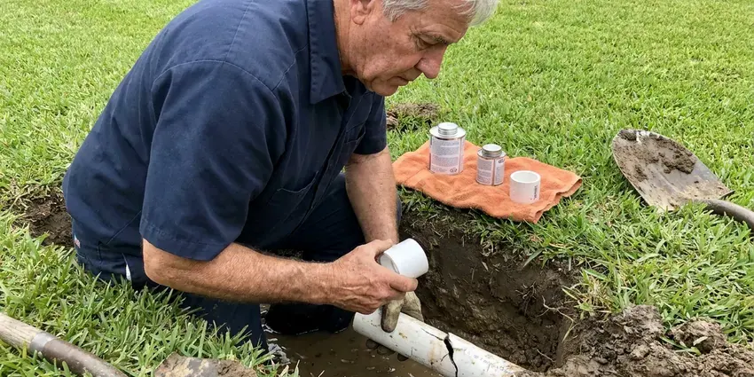

Polybutylene Plumbing Replacement in Bradenton, FL
Polybutylene replacement in Bradenton, FL with drywall patching, permits and testing included in one price.
- Code Compliant Work
- Licensed, Insured Plumbers
- Permits and Inspection Included
- Written Warranty
Get a Free Polybutylene Replacement Quote in Bradenton, FL
HDF Plumbing handles the permit, the inspection and the drywall for you.
Polybutylene Plumbing Replacement for Florida Homes in Bradenton, FL
HDF Plumbing replaces polybutylene supply piping, including the gray interior lines and the blue or black yard service lines often installed from the late 1970s to the mid 1990s. We remove or abandon the poly pipe and its acetal or copper crimp fittings, then install a complete new PEX-A or copper system. No poly remains in service.
Some of what we do:
- PB2110 checks at heater, sinks and main
- Pressure testing on every repipe
- Quick identification of poly pipe and fittings

Additional Plumbing Maintenance Services in Bradenton, FL
Our maintenance and specialty plumbing services in Bradenton, FL protect your home year-round and extend the life of every system.


Customers
Why Choose HDF Plumbing for Polybutylene Plumbing Replacement in Bradenton, FL?
Our crews have replaced poly pipe in Florida homes of every type, from slab ranches to two-story houses. We work around tight attics and finished drywall every week.
- Accurate Assessment, We check every visible line and fitting to confirm polybutylene before quoting.
- Local Knowledge, We know Florida building codes and what local water does to aging pipe.
- Clean Water Lines, Fresh PEX or copper replaces brittle old pipe from the main to every faucet.
Citywide Coverage
Wherever your home is in Bradenton, an estimator can usually be there within a few days. The visit is free. In about an hour we check the heater, main and fixtures, look at the attic and give you a written price.
Experienced Team
Our plumbing technicians know the failure points in poly systems, from crimp rings that corrode to acetal elbows that crack. That shapes how we plan. They keep up with training on PEX-A installation rules and new fittings, because the manufacturer warranty depends on following those rules exactly.
Safety-First Approach
Every poly replacement we do in Bradenton, FL is permitted and tested. No exceptions.
Trusted Certified Bradenton Plumbing Services Professionals
At HDF Plumbing, we take pride in licensed, certified plumbing services throughout Bradenton, FL. Credentials matter in this trade. Every repair, install and maintenance visit follows strict safety and quality rules, and the plumbers doing the work carry recognized industry credentials.
Call Us Now PHCC Plumbing Contractor Recognition
PHCC Plumbing Contractor Recognition Better Business Bureau (BBB) Accreditation
Better Business Bureau (BBB) Accreditation Angi Certified Pro
Angi Certified Pro ISO 9001 Quality Management Certification
ISO 9001 Quality Management CertificationPolybutylene Replacement Services in Bradenton, FL
Full Home Repiping with PEX in Bradenton
Most poly replacements we do use PEX-A, a flexible tubing that runs long distances with few fittings. For slab houses, new PEX-A runs through the attic and drops down interior walls, so none of it sits under the floor. It also tolerates freezing better. Expansion fittings keep the bore full size, which helps pressure at the last fixture on the line.

Whole-Home PEX Replacement in Bradenton, FL
PEX-A is the most common replacement for polybutylene because it is flexible, scale resistant and easy to route. Our crews use Uponor PEX-A and full-bore fittings. Every fixture, appliance and the water heater gets new pipe from the main, and most houses are finished in two to four days with water on each evening.
Copper Replacement for Polybutylene in Bradenton, FL
Some homeowners in Bradenton, FL want copper when they take out polybutylene. That works fine. We install Type L copper, which has a thicker wall than the Type M used in many older homes, and join it with lead-free solder or press fittings. Expect a higher price and a slightly longer job with copper, in exchange for good heat and UV tolerance and a long history.
Insurance and Home Sale Documentation in Bradenton
Some insurers decline or surcharge policies on homes with polybutylene. Buyers ask about it too. Once the work is done you get the permit, invoice and photos, which is what agents and buyers ask to see.
Yard Service Line Replacement in Bradenton, FL
Many poly-era homes also have a blue or black polybutylene service line running from the water meter to the house. Buried poly service lines split, run up bills and saturate the yard. Utilities get marked first. After locating, we trench, lay new PEX or copper and tie it into a new main shutoff at the house.
Finding Polybutylene Leaks in Bradenton
A poly leak inside a wall or ceiling can run for days before you see a stain. Watch the water meter. If the meter's leak dial moves with everything off, we track the leak down with acoustic equipment and thermal imaging instead of guessing. Finding it lets us make a temporary repair and plan the full replacement.
Partial Polybutylene Replacement in Bradenton, FL
Full replacement is the right long-term fix, but it is not always possible right away. Sometimes it has to wait. We can replace the highest-risk sections first, like the lines and fittings near the water heater and in the attic, and plan the rest for later so you are not carrying all of the risk in the meantime. You will know exactly what remains.

Polybutylene Leak Repair in Bradenton
Repairs on polybutylene are temporary by nature, because the pipe next to the repair is the same age. A repair buys time. We cut out the failed piece and splice in PEX with listed fittings, stopping the leak and giving you time to plan the full job.
Polybutylene Plumbing Replacement Near Me in Bradenton, FL
If you are searching for polybutylene replacement near me, HDF Plumbing offers free inspections throughout Bradenton. We confirm what pipe you have and explain your options, then give you a firm written price.
Our crews know the housing tracts in Bradenton where polybutylene was used most. That helps us plan routes quickly. Knowing how those houses are framed and piped means fewer wall openings, shorter runs and a cleaner job from start to finish.
HDF Plumbing at a Glance
- Fully licensed plumbing team covering Bradenton, FL
- 24/7 emergency service with same-day scheduling
- Upfront, flat-rate pricing before work begins
- 4.9-star rated by 739+ Florida customers
Bradenton Map
Bradenton Information
- Population
- 57,076
- Area codes
- 941/727/813
- Service area
- Bradenton and communities within 40 miles
- Nearby
- Sarasota, St. Petersburg, Pinellas Park, Riverview
Many Bradenton, FL homes from the 1980s and early 1990s still have poly pipe, and a planned swap costs far less than a flood.
Expert Services
Reach out to HDF Plumbing for honest, reliable plumbing from people who know the trade in Bradenton, FL.
Our Specialized Plumbing Services in Bradenton, FL
At HDF Plumbing, we handle the full list of plumbing services across Bradenton, FL. We go from leak detection all the way to full system installations, for homes and commercial buildings, and we do it quickly at a fair price. Take a look at our core services below:


How Polybutylene Replacement Works in Bradenton, FL
Polybutylene replacement in Bradenton, FL follows a set daily plan so you know what to expect.
Book a Consultation
Call (904) 925-7356 to set up a visit. We look at your poly system and ask about your plans.
Inspect the System
We follow the poly lines through the attic and walls and note any leaks or worn fittings.
Review the Proposal
You get a written proposal with materials, timeline and price. We go over it with you before starting.
Frequently Asked Questions About Polybutylene Plumbing Replacement in Bradenton
Most PEX replacements of polybutylene cost $5,000 to $12,000 for an average home. Copper runs higher, and a yard line usually adds $1,500 to $4,000.
Replacing an entire supply system requires routing, pressure testing and permits. A licensed crew finishes faster and provides warranties and documentation.
There will be some noise and a few small openings in walls. We keep it contained. Our crews cover furniture, protect floors and clean up thoroughly each day, and we work through the house in sections so most rooms stay usable while we are there.
Most homes take two to four days for plumbing, plus a day for drywall patching. You will have water most nights.
Both work well in Florida homes. PEX bends, tolerates freezes and costs less. Copper is rigid, lasts a long time and tolerates sunlight and heat, and we will help you choose based on your home, your water and your budget.
We commonly use Uponor PEX-A and Type L copper with Viega ProPress or soldered fittings. We recommend materials based on your home and water conditions.
Gray, blue or black plastic pipe marked PB2110 at the water heater or under sinks is the clearest sign. Age is another. If your home was built between about 1978 and 1995, has this pipe and has had even one leak at a fitting, replacement is strongly recommended before the next one.
Most full poly repipes take three to five days, including drywall patching. Big houses need more time. The schedule depends on the number of fixtures, attic access and whether you choose PEX or copper, and water is usually back on at the end of each work day.
What People Are Saying About Our Plumbing Experts?

Kevin O.
Before buying our house I paid for a sewer camera inspection. HDF Plumbing found a belly in the line that held standing water about forty feet from the cleanout. We used the video to get the sellers to fix it before closing.
Sewer Camera Inspection · Sarasota, FLRobert G.
The camera showed a full break in our clay sewer line near the street. HDF Plumbing replaced it with a trenchless pipe burst, so the only digging was two small pits in the yard. They let us watch the footage before and after.
Sewer Line Replacement · St. Petersburg, FL
Mark T.
The floor drain in our office break room backed up every few weeks. The plumber ran a cable, then put a camera down and found roots at a joint about thirty feet out. Seeing it on the screen made the decision easy.
Drain Cleaning · St. Petersburg, FLJames P.
Our restaurant had a slow leak at the hand sink that was rotting the cabinet base. HDF Plumbing came in at six in the morning before prep, replaced the trap and both supply lines, and was packed up before my first cook clocked in.
Commercial Plumbing · Bradenton, FL
Diane F.
My kitchen faucet had dripped for months and I finally got tired of hearing it at night. HDF Plumbing came out the next morning, replaced the cartridge and the O rings, and tightened a loose base that was letting water under the sink.
Faucet Repair · Plantation, FLPaul B.
Our pit pump ran nonstop even in dry weather. The plumber found the check valve was stuck open, so the same water kept cycling back into the pit. New valve, new float switch, done in an hour. It runs quiet now.
Sump Pump · St. Petersburg, FL